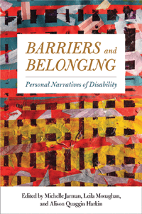

<body bgcolor="#FFFFFF" text="#000000" link="#0000FF" vlink="#CC0000" alink="#CC0000"><center><hr width="350" size="1" align="center" noshade>A collection of personal narratives that asks, Why does disability studies matter?<hr width="350" size="1" align="center" noshade><p><a href="https://cdcshoppingcart.uchicago.edu/Cart/ChicagoBook.aspx?ISBN=&&PRESS=temple" target="_top">Buy this book!</a> | <a href="https://cdcshoppingcart.uchicago.edu/Cart/Cart.aspx?PRESS=temple" target="_top">View Cart</a> | <a href="https://cdcshoppingcart.uchicago.edu/Cart/Cart.aspx?PRESS=temple" target="_top">Check Out</a></p><p></p></center><!--none//--><h1 class = "booktitle">Barriers and Belonging</h1> <h1 class = "subtitle">Personal Narratives of Disability</h1>
<h3>Edited by Michelle Jarman, Leila Monaghan, and Alison Quaggin Harkin</h3>
paper: $39.95, Feb 17<BR>EAN:&nbsp;978-1-4399-1388-8<BR><font color=#990033>Not Yet Published Preorder</FONT><font size=-7><br>&nbsp;</font></p><p class="info">cloth: $94.50, Feb 17<BR>EAN:&nbsp;978-1-4399-1387-1<BR><font color=#990033>Not Yet Published Preorder</FONT><font size=-7><br>&nbsp;</font></p><p class="info">e-book: $39.95, Feb 17<BR>EAN:&nbsp;978-1-4399-1389-5<BR><font color=#990033>Not Yet Published Preorder</FONT><font size=-7><br>&nbsp;</font></p></p></td></tr></table>
<BR> <p class="info">296 pp<BR> 6 x 9<BR> <p class="info"><font size=-7>&nbsp;</font></p><p class="info">
</P><BLOCKQUOTE><p>
"Barriers&nbsp;and Belonging&nbsp;<i>covers a wide range of topics yet remains coherent as a collection. It touches on many of the important discussions currently animating the field and includes topics rarely discussed in disability studies, such as the experiences of people in rural settings and the role of religious faith in people's lives. This book will shift students' understandings of disability, catalyze disability organizing on campus, and re-orient pedagogy and curricula."</i>-Alison Kafer, Professor of Feminist Studies at Southwestern University, and author of&nbsp;<i>Feminist, Queer, Crip</i>
<br></BLOCKQUOTE>
<p>
What is the direct impact that disability studies has on the lives of disabled people today? The editors and contributors to the essential anthology, <i>Barriers and Belonging</i>, provide thirty-seven personal narratives that explore what it means to live with disability and why the field of disability studies matters. Every chapter includes key terms, discussion questions, and suggestions for further reading.
<br /><i>Barriers and Belonging</i> explores how disability informs self-knowledge, interpersonal and community relationships, and political commitments. Contributors offer experiential insight into living with an array of disabilities, from spinal cord injuries, blindness, deafness, and autism to psychiatric diagnoses, learning disabilities, and chronic pain. Several essays articulate activist and pride orientations toward disability, demonstrating the importance of understanding disability as a multi-dimensional process-as personal, relational and socio-political.
<br>
<P CLASS="top"><A HREF="#top">BACK TO TOP</A></P>&nbsp;<h2 class="inpageheading"><A NAME="excerpt"></a>Excerpt</h2><p>
<A HREF="http://www.temple.edu/tempress/chapters_2400/2416_ch1.pdf">Read the Introduction (pdf).</a>
<br>
<P CLASS="top"><A HREF="#top">BACK TO TOP</A></P>
<BR>&nbsp;
<h2 class="inpageheading"><A NAME="reviews"></a>Reviews</h2>
<p>
"Barriers&nbsp;and Belonging&nbsp;<i>is a hugely important volume-the first of its kind. As an original book that involves a synthesis of literatures and arguments, it offers an incredible range of diversity, experiences, and voices. One of its greatest strengths is how truly student-friendly it is. The focus on personal experience is notable, and the contributors explore many facets of the overall disability experience. I am&nbsp;very&nbsp;excited about the possibilities for this volume!"</i>-<b>Brenda Jo Brueggemann</b>, Professor of English and Aetna Endowed Chair of Writing at the University of Connecticut, and author of&nbsp;<i>Deaf Subjects: Between Identities and Places</i>
<br>
<P CLASS="top"><A HREF="#top">BACK TO TOP</A></P>&nbsp;<P>
<h2 class="inpageheading"><A NAME="contents"></a>Contents</h2><P><SPAN STYLE="font-family: 'Verdana';font-size: 13px;" >Acknowledgments&#8199;<BR>Introduction: Entering the Field / Michelle Jarman and Leila Monaghan<BR><BR></SPAN><SPAN STYLE="font-family: 'Verdana';font-size: 13px;font-weight: bold;" >PART I LAYING THE GROUNDWORK<BR></SPAN><SPAN STYLE="font-family: 'Verdana';font-size: 13px;" >I.1. From Poison Ivy to Live Oak: How Transferring Colleges Changed My Perception of Disability / Alyse Ritvo<BR>I.2. Speaking Madness / Shayda Kafai<BR>I.3. Transitioning from One Culture to Another / Anmol Bhatia<BR>I.4. Growing Up with ADHD / Joshua Phelps<BR>I.5. Disability and Sports / Christopher Weingardt<BR>I.6. </SPAN><SPAN STYLE="font-family: 'Verdana';font-size: 13px;font-style:italic;" >Contours of&#8199;Ableism</SPAN><SPAN STYLE="font-family: 'Verdana';font-size: 13px;" > and Transforming a Disabled Life / Zachary A. Richter<BR>I.7. I Can Dance! / Suzi Vee<BR><BR></SPAN><SPAN STYLE="font-family: 'Verdana';font-size: 13px;font-weight: bold;" >PART II FAMILIES, ADAPTIVE LIVING, AND REORIENTING EXPECTATIONS<BR></SPAN><SPAN STYLE="font-family: 'Verdana';font-size: 13px;" >II.1. Life Given and Memory Lost / Mycie Lubin<BR>II.2. Beating the Odds: Life with an Invisible and Chronic Disability / Elizabeth Allyn Campbell<BR>II.3. Benjamin Is Benjamin / Joanne De Simone<BR>II.4. Conversation with a Mother and Son: An Interview/ Tricia Black, Michael Black, and Leila Monaghan<BR>II.5. Taking Disability One Stage at a Time (unless They Attack You All at Once) / Christina Spence<BR>II.6. My Brother&rsquo;s Traumatic Brain Injury and Its Effect on Me / Douglas Kidd<BR><BR></SPAN><SPAN STYLE="font-family: 'Verdana';font-size: 13px;font-weight: bold;" >PART III DISABILITY AND COMMUNICATION<BR></SPAN><SPAN STYLE="font-family: 'Verdana';font-size: 13px;" >III.1. Voicing Disability with Disabled Voices: Reimagining a Stuttered Identity / Joshua St. Pierre<BR>III.2. Fibromyalgia Syndrome / Catherine Graves<BR>III.3. ASL in a Hearing World / Blake Culley<BR>III.4. Bumping into Things while Treading Carefully: On Narrative, Blindness, and Longing for Light/ Tasha Chemel<BR>III.5. What I Wish You Would Ask: Conversations about Cerebral Palsy / Leigh A. Neithardt<BR>III.6. Take a Second Look / Leslie Johnson Elliott<BR><BR></SPAN><SPAN STYLE="font-family: 'Verdana';font-size: 13px;font-weight: bold;" >PART IV MAPPING COMPLEX RELATIONS<BR></SPAN><SPAN STYLE="font-family: 'Verdana';font-size: 13px;" >IV.1. My Name is Anna / Anna Roach<BR>IV.2. Living Blind / Caitlin Hernandez<BR>IV.3. Shades of Shame / Emily K. Michael<BR>IV.4. Abandoning Normalcy / Garret R. Cruzan<BR>IV.5. A Quiet Conflict: Post-traumatic Stress Disorder / Michael T. Salter<BR>IV.6. Brother and Sister in Arms / Rachel Anderson<BR><BR></SPAN><SPAN STYLE="font-family: 'Verdana';font-size: 13px;font-weight: bold;" >PART V IDENTITY, RESISTANCE, AND COMMUNITY<BR></SPAN><SPAN STYLE="font-family: 'Verdana';font-size: 13px;" >V.1. Disability, Belonging, Pride / Allegra Heath-Stout<BR>V.2. Deconstructing &ldquo;Accessible&rdquo; Education in Academia / Nancy La Monica<BR>V.3. Fake It until You Make It (or until You Find Your Place) / Megan L. Coggins<BR>V.4. My Anxiety / Susan Macri<BR>V.5. Disability, the Lure of Escapism, and Making the Invisible Visible / Suzanne Walker<BR>V.6. Discovering My Deaf Identity / Denton Mallas<BR><BR></SPAN><SPAN STYLE="font-family: 'Verdana';font-size: 13px;font-weight: bold;" >PART VI THEORIES AND LIVES<BR></SPAN><SPAN STYLE="font-family: 'Verdana';font-size: 13px;" >VI.1. Taking Great Pains with Disability Theory / Adena Rottenstein<BR>VI.2. Medicating My Socially Constructed Disability / Cindee Calton<BR>VI.3. Flourishing with Polio: A Spiritual, Transformational, and Disability Studies Perspective / Rodney B. Hume-Dawson<BR>VI.4. Learning to See Myself in the Mirror / Adam P. Newman<BR>VI.5. Writing Myself into Madness and Disability Studies / Rebekah Moras<BR>VI.6. Autism Isn&rsquo;t Speaking: Autistic Subversion in Media and Public Policy / Lydia X. Z. Brown<BR>Afterword: Negotiating the Future / Leila Monaghan<BR><BR>Index</SPAN></P>
<P CLASS="top"><A HREF="#top">BACK TO TOP</A></P>
</P><BR>&nbsp;
<H2 class="inpageheading"><A NAME="author bio"></a>About the Author(s)</H2><p>
<b>Michelle Jarman</b> is Associate Professor of Disability Studies, Wyoming Institute for Disabilities at the University of Wyoming.
<br>
<p>
<b>Leila Monaghan</b> is Lecturer in Anthropology at Northern Arizona University.
<br>
<p>
<b>Alison Quaggin Harkin</b> is Temporary Assistant Lecturer of Disability Studies, Gender and Women's Studies, and English at the University of Wyoming.
<br>
<P CLASS="top"><A HREF="#top">BACK TO TOP</A></P>
<p><h2 class="inpageheading"><A NAME="subjects"></a>Subject Categories</h2><P><A HREF="/tempress/biography.html" TARGET="_top">Biography/Memoir/Autobiography</a><BR><P><A HREF="/tempress/disability.html" TARGET="_top">Disability Studies</a></P>
</p>
<P>
</P>
<p align="center"><a href="https://cdcshoppingcart.uchicago.edu/Cart/ChicagoBook.aspx?ISBN=&&PRESS=temple" target="_top">Buy this book!</a> | <a href="https://cdcshoppingcart.uchicago.edu/Cart/Cart.aspx?PRESS=temple" target="_top">View Cart</a> | <a href="https://cdcshoppingcart.uchicago.edu/Cart/Cart.aspx?PRESS=temple" target="_top">Check Out</a></p><p><font face="Arial" size="1"><a href="copyright.html" onMouseOver="window.status='Web Copyright Policy';return true;" onMouseOut="window.status=''" title="Web Copyright Policy">&copy;</a> 2017 <a href="http://www.temple.edu" target="new" onMouseOver="window.status='Link to Temple University home page';return true;" onMouseOut="window.status=''" title="Link to Temple University home page">Temple University</a>. All Rights Reserved. http://www.temple.edu/tempress/titles/2416_reg.html</font></p>